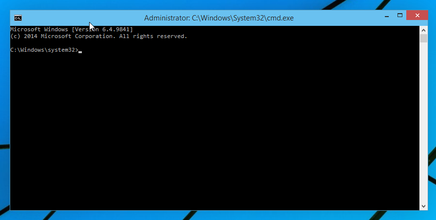

Commençons par l'utilisation du cmd(invité de commandes) qui est un logiciel préinstallé sous windows et qui
permet d'effectuer des "commandes" comme des raccourcis, exécuter un programme, modifier windows, etc.
Le logiciel peut être utilisé en procédant de la façon suivante:
cliquez ou appuyez sur  en bas de vote clavier
en bas de vote clavier
écrivez: "cmd" ou "invité de commandes"
cliquez dessus si vous utilisez la souris ou sur "Entrer" si vous utilisez votre clavier
Il existe néanmoins d'autres façons d'ouvrir ce logiciel si vous ne réussissez pas à l'ouvrir, vous pouvez aussi le télécharger.
Sur l'image ci-dessous, l'invité de commandes a été ouvert en tant qu'administrateur et permet l'utilisation de commandes supplémentaires.
Après son ouverture, le logiciel ressemble à l'image ci-dessous:
